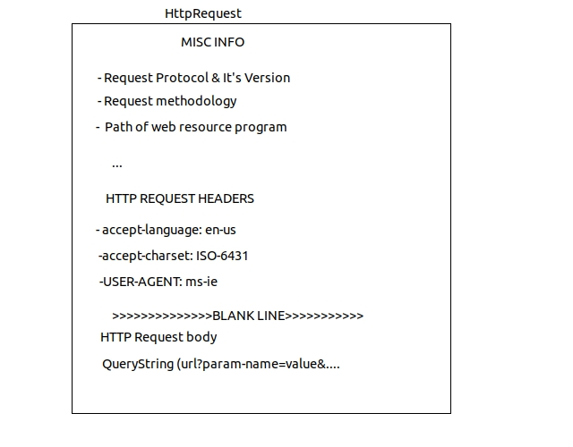
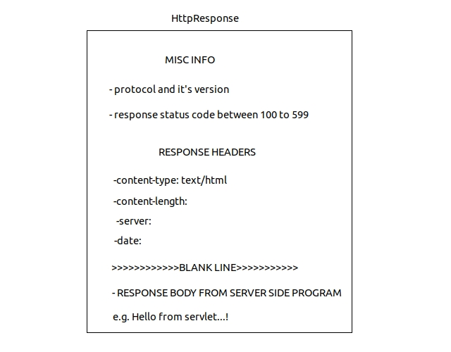
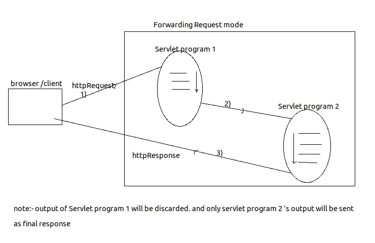
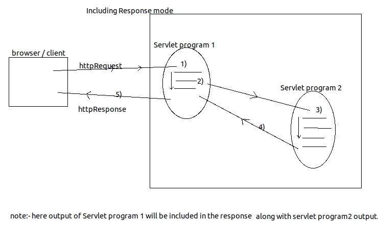
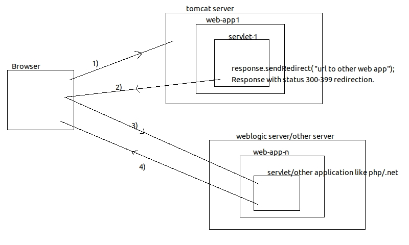

Tutorial Campus....!
What is difference between web-app and website ?
Servlet :-
Servlet is a java based server side technology that allows us to create server side web resource programm in java web-app.
Servlet api-3.0 packages
javax.servlet.Servlet(I) ----> javax.servlet.GenericServlet(AC) -----> javax.servlet.HttpServlet(AC)
Creating Servlet
there is possiblity to develop n-types of servlet. depending on the protocol we want to implement. like HTTP, FTP, SMTP etc.
Sample Servlet Program
Web.xml
FirstServlet.java
GenericServlet class request processing methods
Idempotent:- allowing multiple simoultaneous requests from a client before compleing other request given by that client is called idempotent behaviour.
that is browser maintains state of the request if it is posted or not. we can perform multiple GET request continiously as get is idmepotent and it will not make any chages at server.
but if we try to perform post request second time, browser will prompt us with a message that request is already send and do you
still want to resend this request.
POST request is non idempotent.
Source code for above form is as below
if there are multiple submit buttons for same form, we can identify the request with help of value of submit button e.g.
<input type="submit" value="add" >
<input type="submit" value="multiply" >
<input type="submit" value ="divide" >
String submitValue=request.getParameter("submit");
depending on value of submit button we can apply logic in Servlet program.
if we want to send request to servlet with help of hyperlink we can use below sample.
<a href="servletUrl?param1=param1value¶m2=param2value">hyperlink name<a>
We can read all the details that are coming along with browser generated request using request object of servlet program.
To get request parameters below are the approaches.
To get request Header parameters we can use below approaches.
Q)How to find current browser software name from which request is generated ?
String browserName= request.getHeader("user-agent"); this will get us the browser name
Q) What are the different http response codes given by Web-Resource program.
These are applicable for REST applications or any other language applications like php/.net
Structure of HTTP Response
Q) How to disable buffer of browser window
response.setHeader("cache-control","no-cache"); // for http 1.1 .
response.setHeader("pragma","no-cache"); // in http 1.0 .
List Of Request Headers
We can take only one of the two streams pointing to response object to write data to browser window at a time.
ANS:- if load-on-startup is enabled, it will be created at startup of server itself.
if not used load-on-startup then it will be created at time of first request arrival.
Q)When Servlet Container destroys our servlet class object ?
ANS:- when our application is stopped or reloaded or undeployed at that time only.
Q) What happens if we call destroy() method from service method ?
ANS:- servlet class object created by container will not be destroyed. it will just execute statements / logic written in it. but it will not impact our servlet object created by Container. same thing will happen with init().
Q)how servlet program is executed without main().
ANS:- main() method is life cycle method of any standalone application. as it's execution start from main(); in case of servelet program lifecycle methods are init(-),service(-,-), & destroy();
Q)Why there is init() method given when there is already init(ServletConfig cg) method available ?
ANS:-As we know init(ServletConfig) [this method is implemented and present in GenericServlet] is lifecycle method and ServletConfig object must be passed at time of initialization.
---> if we only call init() method, ServletConfig object will not be initialized.
---> so solution is if we override init(ServletConfig) in our servlet class then we must call super.init(ServletConfig)
---> if we are not overriding init(ServletConfig) in our class then base class method will be called. i.e. HttpServlet/ GenericServlet's method init(ServletConfig).
---> note that init() method is just user convinience method. to execute some one time operation we can use this method.
again question remains is then when init() method is called :- while executing init(ServletConfig) lifecycle method, this method gets called internally.
let's consider below example...!
Our Servlet Program
W.R.T. above code scenario
Q)if Both service(-,-) methods are placed in our servlet program then which method will be executed?
Ans:Since public service(-,-) method is lifecycle method of our servlet program only public service(-,-) method will be executed. Even though public service(-,-) method is life-cycle method , it is recommendd to place request processing logic of our servlet program by using doXXX(-,-) methods because they are defined based on Http protocol standards moreover if they are not placed properly the super class doXXX(-,-) methods simply send 405 error to client indicating problem.
Q)when all the methods of pre-defined HttpServlet class are concrete methods, why the class itself is given as an abstract class ?
Ans:
Ans:- protected service(-,-) is given to expose HttpServletRequest, HttpServletResponse object directly to programmer and to make the programmer working with all the features of protocol HTTP.
doXXX(-,-) also gives HttpServletRequest , HttpServletResponse object but also allows the programmer to place request processing logic of different request methodologies in different doXXX(-,-) methods like doGet(-,-) , doPost(-,-). etc
Q) When 405 error will be generated in servlet program execution ?
Ans:- 405 error will be sent When Servlet Container executes doXXX(-,-) methods of predefined HttpServlet class.
Q) if you place all the 7 doXXX(-,-) and 2 service(-,-) methods in our servlet program then which method will be executed ?
Ans:- Only public service(-,-) will be executed because it is a life-cycle method.
Note:- A good program uses init() to plce initialization logic and use doGet(-,-) & doPost(-,-) methods to place request processing logic in his servlet program.
Note:- Hyperlinks generate GET type of request. & form can send GET/POST request using method="-" attribute.
Note:-Only one instance per servlet and multiple threads are created per servlet. so if we are using any instance variable in servlet program then that variable is not thread safe. i.e. same copy of instance variable will be used by all the threads. so we can use synchronized doxxx(-,-)/service(-,-) methods or synchronized{...} blocks. local variables in doXXX(-,-) or service(-,-) are thread safe by default.
Ans:-
Ans:- 10-4=6 objects will be available.
Ans:- 3+3=6 ServletConfig Objects will be available. As ServletConfig object will be created just after creating instance of our Servlet class.
Note:- Programmer doesen't create our Servlet,Request,Response,ServletConfig,ServletContext objects because Servlet-Container creates all these objects but we can get access to these objects in our Servlet Programm.
Note:- We need ServletCongig object directly or indirectly to access ServletContext object.
Note:- init parameter values are specific to one servlet. & Context param values are visible in all the servlet programs of web application.
Ans:-
Note:- To create RequestDispatcher for jsp or html program.
RequestDispatcher=request or servletContext.getRequestDispatcher("abc.jsp") / ("abc.html");
Q) What is difference between creating RequestDispatcher object by using request object and by using servletContext object.
Ans:-
Ans:- Error Servlet is useful to display Error or exception related messages to end users.
Ans:- The effect of rd.include(-,-) will not be there because rd.forward(-,-) discards html output of source servlet program.
Q)What happens if multiple rd.include(-,-) are placed in one source servlet program.
Ans:- the effect of multiple rd.include(-,-) takes place and output o multiple destination servlet program will be included with output of source servlet program.
Ans:-
Q)How to pass data between web resource program of web application ?
There are following ways through which we can track a session.
- The web app that is placed on the internet network having domain name like www.xyz.com is called website.
- Every web application is a collection of web resource programms having capability to generate web pages.
Introduction
Servlet :-
Servlet is a java based server side technology that allows us to create server side web resource programm in java web-app.
Servlet api-3.0 packages
- javax.servlet
- javax.servlet.http
- javax.servlet.annotation
- javax.servlet.descriptor
javax.servlet.Servlet(I) ----> javax.servlet.GenericServlet(AC) -----> javax.servlet.HttpServlet(AC)
Creating Servlet
- Approach 1:- implement Servlet interface and its 5 methods
- Approach 2:- extend java class by GenericServlet class and implemnet Service(Request,Response) method.
- Approach 3:- extend java class by HttpServlet and override on of do doXXX(-,-) or two service(-,-) methods
there is possiblity to develop n-types of servlet. depending on the protocol we want to implement. like HTTP, FTP, SMTP etc.
Sample Servlet Program
Web.xml
<?xml version="1.0" encoding="UTF-8"?>
<web-app xmlns:xsi="http://www.w3.org/2001/XMLSchema-instance"
xmlns="http://xmlns.jcp.org/xml/ns/javaee" xsi:schemaLocation=
"http://xmlns.jcp.org/xml/ns/javaee http://xmlns.jcp.org/xml/ns/javaee/web-app_3_1.xsd"
id="WebApp_ID" version="3.1">
<display-name>ServletApplication</display-name>
<servlet>
<servlet-name>firstServlet</servlet-name>
<servlet-class>controller.FirstServlet</servlet-class>
</servlet>
<servlet-mapping>
<servlet-name>firstServlet</servlet-name>
<url-pattern>/firstServlet</url-pattern>
<url-pattern>/fs</url-pattern>
</servlet-mapping>
<welcome-file-list>
<welcome-file>index.html</welcome-file>
<welcome-file>index.htm</welcome-file>
<welcome-file>index.jsp</welcome-file>
<welcome-file>default.html</welcome-file>
<welcome-file>default.htm</welcome-file>
<welcome-file>default.jsp</welcome-file>
</welcome-file-list>
</web-app>
FirstServlet.java
package controller;
import java.io.IOException;
import java.io.PrintWriter;
import javax.servlet.GenericServlet;
import javax.servlet.ServletException;
import javax.servlet.ServletRequest;
import javax.servlet.ServletResponse;
public class FirstServlet extends GenericServlet {
@Override
public void service(ServletRequest request, ServletResponse response)
throws ServletException, IOException {
response.setContentType("text/html");
PrintWriter pw=response.getWriter();
request.setAttribute("attribute1", "firstAttribute");
pw.println("hello world...!");
pw.close();
}
}
- As shown in above xml we can provide multiple url-pattern 's for a servlet.
- pw.println(---) messages of servlet program goes to browser window.
- System.out.println(--) messages goes to standard console of server or logfile configured.
Types of url patterns
- ExactMatch URL Pattern :- e.g. /DateApp or /login
- DirectoryMatch URL Pattern :- e.g. /x/y/abc or /abc/x/y/
- ExtensionMatch URL Pattern :- e.g. /*.do or /*.c or /*.cpp
WebApp
|
|---WEB-INF
| |---> classes
| | |----> FirstServlet.java
| | |----> SecondServlet.java
| |
| |---> web.xml
|
|--->index.html
|--->index.jsp (etc)
GenericServlet class request processing methods
- public void service(ServletRequest req,ServletResponse res)throws ServletException,IOException
- protected void doXXX(HttpServletRequest req, HttpServletResponse res)throws ServletException,IOException
- protected void service(HttpServletRequest req,HttpServletResponse res)throws ServletException,IOException
- public void service(ServiceRequest req,ServletResponse res) throws ServletException,IOException
GET VS POST
| GET | POST |
|---|---|
| designed to get data form server but can send limited amount of data max 256 kb with request | designed to send request having data . so it can send unlimited amount of data along with request. max 1-2 GB. |
| form generated data is visible in browser's address bar as query string. | form generated data is not visible in browser address bar as query string. |
| not suitable for file uploading | suitable for file uploading. |
| can't encrypt data | can encrypt data |
| it is idempotent | it is not idempotent. |
Idempotent:- allowing multiple simoultaneous requests from a client before compleing other request given by that client is called idempotent behaviour.
that is browser maintains state of the request if it is posted or not. we can perform multiple GET request continiously as get is idmepotent and it will not make any chages at server.
but if we try to perform post request second time, browser will prompt us with a message that request is already send and do you
still want to resend this request.
POST request is non idempotent.
Various Form Components..!
I know that it is very easy to create HTML form , but sometimes we need to test some functionality like webservice or simple servlet program. and you start searching for a readymade form. or sometimes end up with some syntax errors while creating some components. so here is sample html form... !Source code for above form is as below
<form action="/someActionUrl">
<table>
<tr><td colspan="3">Sample Form fields and respective java code to get data in servlet.</td></tr>
<tr>
<td><label name="textFieldLabel"> text field 1</label></td>
<td><input type="text" name="textField1"></td>
<td> String textField1=request.getParameter("textField1")</td>
</tr>
<tr>
<td><label name="passwordFieldLabel"> password field</label> </td>
<td><input type="password" name="passwordField"></td>
<td>String password=request.getParameter("passwordField")</td>
</tr>
<tr>
<td><label name="textArea"> text Area </label></td>
<td><textarea name="textArea" rows="5" cols="20"></textarea></td>
<td>String textArea=request.getParameter("textArea")</td>
</tr>
<tr>
<td><label name="radio">radio button</label></td>
<td>
<input type="radio" name="gender" value="male"> male
<input type="radio" name="gender" value="female"> femal
</td>
<td>String gender= request.getParameter("gender") as only one of the checkbox will be selected.</td>
</tr>
<tr>
<td><label name="checkbox">checkbox</label></td>
<td>
<input type="checkbox" name="course" value="java">java
<input type="checkbox" name="course" value="c">c
<input type="checkbox" name="course" value="c++">c++
</td>
<td> String[] course=request.getParameterValues("course") course[]={ "java","c","c+="}</td>
</tr>
<tr>
<td><label name="select">Select box (allows to select only 1 item)</label></td>
<td>
<select name="qualification">
<option value="Engg"> Engineering</option>
<option value="Medical"> Medical</option>
<option value="Arts"> Arts</option>
</select>
</td>
<td> String qualification=request.getParameter("qualification")</td>
</tr>
<tr>
<td><label name="listbox" multiple> ListBox (allows to select multimple items with ctrl key)</td>
<td>
<select name="course" multiple>
<option value="java">java</option>
<option value=".net">.net</option>
<option value="oracle">oracle</option>
</select>
</td>
<td>String[] course=request.getParameterValues("course") course[]={"java",".net","oracle"}</td>
</tr>
<tr>
<td colspan="3" align="center">
<input type="submit" name="submit" value="submit Form">
</td>
</tr>
</table>
</form>
if there are multiple submit buttons for same form, we can identify the request with help of value of submit button e.g.
<input type="submit" value="add" >
<input type="submit" value="multiply" >
<input type="submit" value ="divide" >
String submitValue=request.getParameter("submit");
depending on value of submit button we can apply logic in Servlet program.
if we want to send request to servlet with help of hyperlink we can use below sample.
<a href="servletUrl?param1=param1value¶m2=param2value">hyperlink name<a>
Http Request Repsonse
Structure of http request

We can read all the details that are coming along with browser generated request using request object of servlet program.
To get request parameters below are the approaches.
- String paramName=request.getParameter("parameter_name")
- String[] requestValues=request.getParameterValues("e.g._course"); //gets all request param values for listbox or checkboxes.
- String[] requestParamNames=request.getParameterNames();
To get request Header parameters we can use below approaches.
- String request.getHeader("header_param_name")
- String[] headerNames=request.getHeaderNames(); //use this if we don't know header param name
Q)How to find current browser software name from which request is generated ?
String browserName= request.getHeader("user-agent"); this will get us the browser name
Q) What are the different http response codes given by Web-Resource program.
These are applicable for REST applications or any other language applications like php/.net
- 100-199 :- Information
- 200-299 :- Success
- 300-399 :- Redirection
- 400-499 :- Incomplete
- 500-599 :- ServerError
Structure of HTTP Response

Q) How to disable buffer of browser window
response.setHeader("cache-control","no-cache"); // for http 1.1 .
response.setHeader("pragma","no-cache"); // in http 1.0 .
List Of Request Headers
- refferer
- accept
- accept-encoding
- accept-language
- authorization
- connection
- cookie
- host
- if-modified-since
- user-agent
- keep-alive
- accept-charset
- Location
- set-cookie
- refresh
- cache-control/pragma
- content-encoding
- content-length
- content-type
- last-modified
- date
- server
- connection
- content-disposition
We can take only one of the two streams pointing to response object to write data to browser window at a time.
- [character stream for character data.] PrintWriter pw= response.getWriter();
- [byte stream for binary data.] ServletOutputStream sos= response.getOutputStream();
Servlet Life Cycle
- public coid init(ServletConfig) throws ServletException :- for instantiation event. one time execution method.
- public void service(ServletRequest req, ServletResponse res) throws IOException, ServletException :- repeted operations logic could be placed here.
- note :- protected service(-,-) & doXXX(-,-) methods are not lifecycle methods.
- public void destroy() :- for destruction event. one time execution method. can be used for resource cleanup operations.
ServletConfig :-
- Servlet Config object is right hand object and one per our servlet class object .
- this object is useful to pass additional information to our Servlet program and to gather details about our servlet program.
- Servlet container creates this object along with it's servlet class object.
Internal Execution When first request comes to Servlet Program.
- Servlet container creates one set of request , response objects (for that browser request)
- Servlet container loads our servlet class and creates object by calling newInstance()
Class.forName("DateServet").newInstance(); - in this process 0-param constructor of our servlet program will be executed.
- Servlet Container creates ServletConfig object and calls init(ServletConfig servletConfig)
- up to above steps will be executed if our server is just started. and as it is first request to our servlet program , due to above steps it takes more time for first request.
- to avoid this we can use <load-on-startup> so that on startup itself server will do these steps and keep our servlet instance for service the incoming requests.
- Servlet Container will raise request arrival event and calls the lifecycle method service(-,-)
- service method will process the request and sends response back to browser window.
ANS:- if load-on-startup is enabled, it will be created at startup of server itself.
if not used load-on-startup then it will be created at time of first request arrival.
Q)When Servlet Container destroys our servlet class object ?
ANS:- when our application is stopped or reloaded or undeployed at that time only.
Q) What happens if we call destroy() method from service method ?
ANS:- servlet class object created by container will not be destroyed. it will just execute statements / logic written in it. but it will not impact our servlet object created by Container. same thing will happen with init().
Q)how servlet program is executed without main().
ANS:- main() method is life cycle method of any standalone application. as it's execution start from main(); in case of servelet program lifecycle methods are init(-),service(-,-), & destroy();
Q)Why there is init() method given when there is already init(ServletConfig cg) method available ?
ANS:-As we know init(ServletConfig) [this method is implemented and present in GenericServlet] is lifecycle method and ServletConfig object must be passed at time of initialization.
---> if we only call init() method, ServletConfig object will not be initialized.
---> so solution is if we override init(ServletConfig) in our servlet class then we must call super.init(ServletConfig)
---> if we are not overriding init(ServletConfig) in our class then base class method will be called. i.e. HttpServlet/ GenericServlet's method init(ServletConfig).
---> note that init() method is just user convinience method. to execute some one time operation we can use this method.
again question remains is then when init() method is called :- while executing init(ServletConfig) lifecycle method, this method gets called internally.
let's consider below example...!
// base class code... you can imagine as GenericServlet class.
public class BaseClass {
public void init(String name) {
System.out.println("name is "+name);
// init() user convinience method is called like this. from GenericServlet
init();
}
public void init()
{
System.out.println("init() from BaseClass...!");
}
}
//derived class code ... you can imagine as you Servlet class code.
public class DerivedClass extends BaseClass{
@Override
public void init()
{
System.out.println("init() from TestClass");
}
}
}
/* imagine this class as ServletContainer
application which is calling life cycle methods
on our servlet class...!
*/
public class AppExecutor{
// imagine container is calling somewhere you init(-) method like this...
public static void main(String[] args) throws FileNotFoundException {
BaseClass baseClass=new DerivedClass();
baseClass.init("SomeName");
}
/*Conclusion is w.r.t. Base class object having derived class reference
and derived class is having overridden method then ,
method called w.r.t. base class objec calls derived class method only...!
:) hope it simplifies this concept. */
2 Service(-,-) & 7 doXXX(-,-) methods
- Whn we develop our servlet program by extending it from pre-defined HttpServlet class we can place request processing logic in our servlet program either by using one of the two service methods or by using doXXX(-,-) methods.
- Even though 7 doXXX(-,-) methods are there, regularly used methods are doGet(-,-) & doPost(-,-).
- only public service(-,-) method is the lifecycle method which Servlet container calls.
- The protected Service(-,-) and doXXX(-,-) methods are given for programer convinience and to extend GenericServlet class functionality to implement HTTP methods GET,POST,PUT,DELETE,HEAD,TRACE,OPTIONS
public abstract class HttpServlet extends
GenericServlet implements Serializable
{
public void service(ServletRequest req,ServletResponse res)
throws ServletException,IOException
{
HttpServletRequest request=(HttpServletRequest) req;
HttpServletResponse response=(HttpServletResponse) res;
service(request,response);
}
protected void service(HttpServletRequest request,
HttpServletResponse response)
throws ServletException,IOException
{
String method=request.getMethod();
if(method.equals("GET"))
{
doGet(request,response);
}
elseif(method.equals("POST"))
{
doPost(request,response);
}
elseif(method.equals("HEAD"))
{
doHead(request,response);
}
elseif(method.equals("DELETE"))
{
doDelete(request,response);
}
elseif(method.equals("PUT"))
{
doPut(request,response);
}
elseif(method.equals("TRACE"))
{
doTrace(request,response);
}
elseif(method.equals("OPTIONS"))
{
doOptions(request,response);
}
}
protected void doGet(HttpServletRequest request,
HttpServletResponse response)
{
/*
if we are not overriding this method in our servlet class
then this method will be called.
this method will send 405 error response to client.
same thing will happen to rest of all doXXX(-,-) methods.
*/
}
//remaining doXXX(-,-) methods.
protected void doXXX(HttpServletRequest request,
HttpServletResponse response)
{
// code to send 405 error message.
}
}
Our Servlet Program
public class TestServlet extends HttpServlet
{
public void doGet(HttpServletRequest request,
HttpServletResponse response)
{
//some logic ...
}
}
W.R.T. above code scenario
- End User gives request to our servlet program having request method "GET" from client.
- Servlet Container creates or locates our servlet class object , if created the servlet container completes the instantiation and initialization related life cycle operations.
- Servlet container raises request arrival event and calls public service(-,-) ,method on our servlet class object as life cycle method having ServletRequest,ServletResponse object as arguments. since public service(-,-) method is not available in our servlet program, the super class (pre-defined HttpServlet class) public service(-,-) method executes.
- The public srvice(-,-) method of pre defined HttpServlet class converts simple ServletRequest & ServletResponse objects to HttpServletRequest & HttpServletResponse object respectively and calls protected service(-,-) method. since protected service (-,-) method is is not available in our servlet class, super class method will get executed.
- The protected service(-,-) method of pre-defined HttpServlet class reads request method of client generated request and calls an appropriate doXXX(-,-) method.
- the doGet(-,-) method of TestSrv program will process the request and sends back the response.
Few Scenarios of method calling sequence.(In case of GET request from client)
-
if our servlet class contains both doGet(-,-) and doPost(-,-)
- public service(-,-) of HttpServlet
- protected service(-,-) of HttpServlet
- doGet(-,-) of our class
-
if our class contains only doPost()
- public service(-,-) of HttpServlet
- protected service(-,-) of HttpServlet
- protected doGet(-,-) of HttpServlet class (as our class is not implementing doGet(-,-)
- 405 response will be sent back to client
-
if our class overrides public service(-,-) and doGet(-,-), doPost(-,-)
- only service(-,-) of our class will get executed. and doGet(-,-) will not get executed as control will not be transfered to protected service(-,-) of HttpServlet.
-
if our class overrides public service(-,-) method and doesnot contain doGet(-,-) method
- public service(-,-) of our class will be executed. 405 response will not be sent.
-
if our class overrides public service(-,-) method and it
makes a call to super.service(-,-) and contains doGet(-,-), doPost(-,-)
- public service(-,-) of our class
- public service(-,-) of HttpServlet class
- protected service(-,-) of HttpServlet class
- doGet(-,-) of our class.
-
if our class overrides public service(-,-) method and makes a
call to super.service(-,-) method and contains only doPost(-,-)
- public service(-,-) of our class
- public service(-,-) of HttpServlet class
- protected service(-,-) of HttpServlet class
- protected doGet(-,-) of HttpServlet class
- 405 respnose will be sent back. as we are not implementing doGet(-,-)
Q)if Both service(-,-) methods are placed in our servlet program then which method will be executed?
Ans:Since public service(-,-) method is lifecycle method of our servlet program only public service(-,-) method will be executed. Even though public service(-,-) method is life-cycle method , it is recommendd to place request processing logic of our servlet program by using doXXX(-,-) methods because they are defined based on Http protocol standards moreover if they are not placed properly the super class doXXX(-,-) methods simply send 405 error to client indicating problem.
Q)when all the methods of pre-defined HttpServlet class are concrete methods, why the class itself is given as an abstract class ?
Ans:
- Abstract class can have only abstract methods or only concrete
methods or mix of both.
javax.servlet.http.HttpServlet class is abstract , even though none of
the methods with in it are abstract it is because , it contains seven
doXXX() methods to match seven ways of making HTTP
request(GET/POST/DELETE/OPTIONS/TRACE/PUT/HEAD).
These methods are the request processing methods of a HttpServlet, just like service(-,-) methods for a GenericServlet. - Since there is only one request-processing method for GenericServlet , it is defined as abstract in javax.servlet.GenericServlet class, which makes the developer making his class to extend javax.servlet.GenericServlet class to provide implementaion only for one method.
- But in case of javax.servlet.http.HttpServlet class , if all 9 request-processing methods [2 service(-,-) & 7 doXXX(-,-)] methods are defined as abstract , then every developer who creates a child class for it, has to provide implementation for all the seven methods which is quite an issue. So the specification has made javax.servlet.http.HttpServlet class to contain implementations for all the 9 methods but they made the javax.servlet.http.HttpServlet class itself as abstract which means no developer can create an instance of it directly.
The seven HttpRequest methods
The Client can send request to web resource program of the web application in seven different ways by using seven different request methods. To process these methods based request in our servlet program override and use 7 different doXXX(-,-) methods.- GET :- Default request method designed to get data from server by generating request without data or with limited amount of data (max 256 kb)
- POST :- We can send request with unlimited amount of data and gathers data from server as response.
- HEAD:- Same as GET but the HEAD based request related response does not contain response body.
- PUT:- This is capable of allowing client to place new file or web resource in already deployed web application of web server. in real projects after placing websites in the web server of ISP(Internet Service Providers) machine we use FTP application from our computers to maintain that website. this FTP application uses PUT method request to add new file or new web resource program in that ISP machine website.
- DELETE:- allows client to send a request having the capability to delete file or web resource program of web application in the server. FTP Application uses this delete method to delete web page or document or anything from the hosted web application of the ISP machine based web server.
- TRACE:- This trace method request returns all the debugging messages and flow of execution details regarding the request and response of certain web resource programs.
- OPTIONS:- the options method based request given to web resource program determines using which Http request methods that this servlet can be request from client. for example if our servlet program overrides doGet(-,-) method as shown below then the OPTIONS method based request given to the servlet program returns the following response. [allow : HEAD,GET,OPTIONS,TRACE]
Ans:- protected service(-,-) is given to expose HttpServletRequest, HttpServletResponse object directly to programmer and to make the programmer working with all the features of protocol HTTP.
doXXX(-,-) also gives HttpServletRequest , HttpServletResponse object but also allows the programmer to place request processing logic of different request methodologies in different doXXX(-,-) methods like doGet(-,-) , doPost(-,-). etc
Q) When 405 error will be generated in servlet program execution ?
Ans:- 405 error will be sent When Servlet Container executes doXXX(-,-) methods of predefined HttpServlet class.
Q) if you place all the 7 doXXX(-,-) and 2 service(-,-) methods in our servlet program then which method will be executed ?
Ans:- Only public service(-,-) will be executed because it is a life-cycle method.
Note:- A good program uses init() to plce initialization logic and use doGet(-,-) & doPost(-,-) methods to place request processing logic in his servlet program.
Note:- Hyperlinks generate GET type of request. & form can send GET/POST request using method="-" attribute.
Note:-Only one instance per servlet and multiple threads are created per servlet. so if we are using any instance variable in servlet program then that variable is not thread safe. i.e. same copy of instance variable will be used by all the threads. so we can use synchronized doxxx(-,-)/service(-,-) methods or synchronized{...} blocks. local variables in doXXX(-,-) or service(-,-) are thread safe by default.
ServletConfig And ServletContext
Q) What is difference between ServletConfig and ServletContext object ?Ans:-
ServletConfig object :-
- It is one per our servlet / jsp page. so it is called as right hand object to our servlet program or jsp program.
- using this object we can pass additional information to our servlet and we can also read additional details about our servlet program.
- this is the object of underlying servlet container supplied java class that implements javax.servlet.ServletConfig(I)
- Servlet container creates this object immediately after our servlet class object and destroyes the object just before our servlet class object.
- using this object , the servlet program can read init parameter values from web.xml file.
ServletContext object :-
- it is one per our java web application and it is visible to all the web resource programs of our web application. so it is called global memory of the web application.
- Servlet container creates this object either on server startup or during deployment of web application and destroyes this object when web application is stopped or reloaded or undeployed.
- it is the object of underlying servlet container supplied java class that implements javax.servlet.ServletContext(I)
- This object is useful for servlet or jsp programms to read context parameters or global init parameter values from web.xml
- This object is also useful for
- to get info about underlying server and it's details
- to get servlet-api version used by underlying server.
- to know inputstream pointing to resources.
- to get content path of web application.
- to get our servlet jsp program names.
Ans:- 10-4=6 objects will be available.
- 10 objects are created on load
- 4 objects are destroyed on web application is stopped.
- 6 objects will remain.
Ans:- 3+3=6 ServletConfig Objects will be available. As ServletConfig object will be created just after creating instance of our Servlet class.
Note:- Programmer doesen't create our Servlet,Request,Response,ServletConfig,ServletContext objects because Servlet-Container creates all these objects but we can get access to these objects in our Servlet Programm.
Different ways of accessing ServletConfig object
- using getServletConfig() of GenericServlet class.:- we can call this method from base Class in init() or service(-,-) or doXXX(-,-) or destroy(-,-)
- by initializing ServletConfig object :-
public class TestServlet extends HttpServlet{ ServletConfig cg; public void init(ServletConfig cg){ super.init(cg); this.cg=cg; } }
Different ways of accessing ServletContext object.
Note:- We need ServletCongig object directly or indirectly to access ServletContext object.
-
using servletConfig.getServletContext();
ServletConfig servletConfig=getServletConfig(); ServletContext sc=servletConfig.getServletContext();
- using getServletContext() of GenericServlet class.:- ServletContext sc=getServletContext();
Passing input values to our servlet program. being from outside of the servlet program.
- As Request-Param value
- useful to collect data from client window
- useful to collect non-technical input values from end users like name, age, address etc.
- to read these values we can use Request object in our servlet.
- As Init or Context -Param value
- useful to collect values from server side. from web.xml file.
- useful to collect technical input values from programmer like jdbc driver class name, db-user-name or path location for file storage
- ServletConfig object is required to get init parameter values.
- ServletContext object is required to get Context parameter values.
Note:- init parameter values are specific to one servlet. & Context param values are visible in all the servlet programs of web application.
Different ways to get Init-Parameters from web.xml
- String driverClassName=servletConfig.getInitParameter("driver-class");
- With help of Enumeration
Enumeration e=servletConfig.getInitParameterNames(); while(e.hasMoreElements()){ String element_name=(String)e.nextElement(); String element_value=servletConfig.getInitParameter(element_name); }
- String paramValue=getServletContext().getInitParameter("param_name");
- using Enumeration
Enumeration e=getServletContext().getInitParameterNames(); While(e.hasMoreElements()) { String paramName= e.nextElement(); String value=sc.getInitParameter(paramName); }
- servletContext.getserverInfo();
- servletContext.getMajorVersion()
- servletContext.getMinorVersion()
- servletContext.getContextPath()
Ans:-
- Servlet container creates ServletConfig object after executing constructor i.e. after creation of servlet object and before calling init(ServletConfig cg) method. due to this ServletConfig object is visible in init(-) method and not visible in constructor.
- you can't access ServletContext object without having access to ServletConfig object.
- hence you cannot access init and context parameters in constructor. but those are accessible in init(-) method.
Servlet Chaining [Servlet To Servlet Communication]
- So far we Processed the request given by client by using sinle web resource program like servlet program.
- Servlet Chaining is nothing but servlet to servlet communication.
- All the Servlet programs that are there in chain will use same Request & Response object while processing a request.

Including Mode

- We need javax.servlet.RequestDispatcher(I) object
- There are multiple ways to create this RequestDispatcher object. Each RequestDispatcher object points to destination program being from source program.
- requestDispatcher.forward(request,response) performs forwarding of request mode of Servlet chaining.
- requestDispatcher.include(request,response) performs including of request mode of Servlet chaining
Different ways to create RequestDispatcher object
- by using request object
// '/' is optional RequestDispatcher rd; rd=request.getRequestDispatcher("/servlet-2-url") rd.forward(req,res); or rd.include(req,res);
- by using ServletContext object
ServletContext servletContext= getServletContext(); RequestDispatcher rd; rd=servletContext.getRequestDispatcher("/servlet-2-url"); rd.forward(req,res); or rd.include(req,res);
- by using ServletContext object
ServletContext servletContext= getServletContext(); RequestDispatcher rd; rd=servletContext.getNamedDispatcher("abc"); //abc is logical name given in web.xml. rd.forward(req,res); or rd.include(req,res);
Note:- To create RequestDispatcher for jsp or html program.
RequestDispatcher=request or servletContext.getRequestDispatcher("abc.jsp") / ("abc.html");
Q) What is difference between creating RequestDispatcher object by using request object and by using servletContext object.
Ans:-
- The request object based RequestDispatcher allows us to place source and destination program in same web application.
- The ServletContext based requestDispatcher object allws us to place the source servlet program and destination servlet program in same web application or different web application of same web server. or in other words in two different web applications of same web server. but not in two different web applications of two different web servers.
Understanding requestDispatcher.forward(-,-)
- requestDispatcher.forward(-,-) performs forwarding mode of servlet chaining.
- both servlet 1 and servlet 2 programms use same request and response object. so the request data coming to servlet 1 program becomes visible and accesible in servlet 2 program.
- to pass additional data between servlet 1 and servlet 2 program we use RequestAttributes.
- response goes back from servlet program 1 having only the html output of servlet program 2.
- all the statements placed before and after rd.forward(-,-) in servlet program executes but their HTML output is discarded.
- Servlet prog 1 and servlet prog 2 can be there in same web application or can be there in two different web applications of same server.
- servlet program2 could be replaced by jsp or html program.
- requestDispatcher.forward(-,-) is useful in error servlet configuration.
Ans:- Error Servlet is useful to display Error or exception related messages to end users.
public void doGet(HttpServletRequest request ,
HttpServletResponse response){
try{
//code which could throw some exception.
}
catch(Exception e){
//here '/eurl' is url of the error page/ error servlet.
RequestDispatcher rd=request.getRequestDispatcher("/eurl");
rd.forward(request,response);
}
}//doGet
Understanding requestDispatcher.include(-,-)
- rd.include(-,-) performs including of servlet response chaining.
- both servlet 1 and servlet 2 programms use same request and response object. so the request data coming to servlet 1 program becomes visible and accesible in servlet 2 program.
- to pass additional data between servlet 1 and servlet 2 program we use RequestAttributes.
- Statements placed before and after rd.include(-,-) will be executed and their html output will not be discarded.
- the response goes to browser window from servlet program 1. which contains both servlet 1 + other programs in chaining.
- Servlet prog 1 and servlet prog 2 can be there in same web application or can be there in two different web applications of same server.
- servlet program2 could be replaced by jsp or html program.
- We can develop tiles like application where we can include header , footer in the response form main servlet .
Ans:- The effect of rd.include(-,-) will not be there because rd.forward(-,-) discards html output of source servlet program.
Q)What happens if multiple rd.include(-,-) are placed in one source servlet program.
Ans:- the effect of multiple rd.include(-,-) takes place and output o multiple destination servlet program will be included with output of source servlet program.
Limitations of RequestDispatcher object
- Doesen't allow to place source and destination programs in two different servers of same or different machines.
- Allows to place source and destination programs in two different applications of same server but this support is only there in weblogic server.
- Allows only servlet program , jsp program html as destination programs. that means it doesen't allow other technology based programs like asp, asp.net,php program as destination programs.
- to overcome these limitations we have response.sendRedirect("url") concept.
Understanding sendRedirection by using sendRedirect(-)

- Brwoser window gives initial request to servlet program 1
- All the statements placed in servlet program 1 including response.sendRedirect(-) will execute. due to this the html output will be discarded.
- servlet program 1 generated implicit response to browser window having url placed in sendRedirect(-) call. this implicit response status code is 300-399 giving instruction to browser window to perform redirection.
- browser window generated implicit request to destination program based on the url collected form implicit response.
- all the statements placed in servlet/ other program of server 2 executes and generates final response with status code 200-299.
- this is redirection mode of servlet chaining.
- Source program communicating with destination program after having 1 network round trip with browser window.
- Servlet program 1 and servlet program 2 will not use same request and response objects . so request data coming to servlet program is not visible and accesible in servlet program 2.
- to pass addtional data we can append url with parameters. like "http://hostname:port/appname?param1=value1&"
- Example of this would be like sending a search request to google with query string
response.sendRedirect("https://www.google.com/search?q="+searchString); this will send search request to google from our website.
Ans:-
- getServletContext() gives the servlet context object of curent web application.
- getContext("AppName") gives the servletContext object of remote or foreign web application.
| rd.forward(-,-) | rd.sendRedirect(-,-) |
|---|---|
| performs forwarding request mode of servlet chaining. | performs sendredirection request mode of servlet chaining. |
| source program communicates with destination program directly. | source program communicates with destination program after 1 network round trip. |
| source and destination program use same set of req. & response objects. so we can pass data in form of attributes. | source and destination programs doesen't use same request and response object .so parameters could be passed in the url. |
| source and destination program should be java program of same servers same or different app. | source and destination program could be different program of different server. |
| url in browser window will not be changed. | url will be changed during sendRedirection. |
Attributes in servlet programming.
Attribute:- is a lobical name that holds value. it is no way related with html/xml attributes. these are given to pass data between web resource program.Q)How to pass data between web resource program of web application ?
- Request Attributes When source and destination are using same request and response objects.
- Session Attributes When source and destination are using same browser window.
- Application Attributes/ServletContext Attributes When source and destination are in residing in same web application; and not using same request response objects and also not getting request from same browser window. i.e. two completly different resource of same web application.
Request Attributes
- Request Attributes allocate memory in request object and having request scope i.e. request attributes are visible throughout request cycle. request attributes are specific to each request.
- Request Attributes will be available to all servlet programs which are in servlet chaining. i.e. using same request object.
- To Create Request Attribute
request.setAttribute("attribute_name",Object obj); -
To modify Request Attribute
request.setAttribute("attribute_name",Object obj); -
To get Request Attribute
e.g.
int age=(TypeCaseClassName)request.getAttribute("attribute_name"); -
To remove Request Attribute
request.removeAttribute("name");
Session Attributes
- session attributes alocates memory in HttpSession object which is one per browser window
- Session attributes are visible in all the web resource programs of web application irrespective to request and response object they use but they must get request from same browsor window having same session.
- session atribute scope is session scope that means they are globally visible but specific to browser window.
- To Create session attribute
Session ses=request.getSession();
ses.setAttribute("attribute_name",Object obj); - To Modify session Attribute value
ses.setAttribute("attribute_name,Object obj"); - To read session Attribute values
String name=(String)ses.getAttribute("attribute_name"); - To remove session Attribute value
ses.removeAttribute("attribute_name");
ServletContext Attributes / Application Attributes.
- These attributes allocates memory in servlet context object which is global memory of java web application.
- These attributes are visible in all the web application programs. irrespective of request response objects they are using and irrespective of browser window from which they are getting request.
- if we create ServletContext attribute from one servlet then that will be available to other servlet irrespective of request or session they are using.
- To Create ServletContext attribute
ServletContext sc=getServletContext(); sc.setAttribute("attribute_name",Object obj); - To modify ServletContext attribute values
ServletContext sc=getServletContext(); sc.setAttribute("attribute_name",Object obj); - To remove ServletContext Attribute values
ServletContext sc=getServletContext(); sc.removeAttribute("attribute_name");
Session Tracking
Session Tracking is nothing but track the previously submitted data. for e.g. if there is big form that cannot be fitted in one browser window then we need to split form in multiple pages. so if we traverse from one form page to another page of same form then previously submitted data must be stored until final submit. So Session Tracking comes to resque from these problems.There are following ways through which we can track a session.
- Hidden form fields.
- Http Cookies.
- HttpSession with Cookies.
- HttpSession with url rewriting.
| GenericServlet | HttpServlet |
|---|---|
| This class based servlet program can handle any protocol based request. | this supports only Http Requests. |
| it is abstract class with 1 abstract method. | it is abstract class with no abstract methods. |
| not suitable to work with Cookies, Sessions, url rewriting. | suitable. |
| gives one additional method init() | gives additional request processing methods like protected service(-,-) & doXXX(-,-) |
Servlet Listeners
- Event is an action performed on object or component.
- Ececuting some logic when event is raised is called event handeling. for this we need event listeners which are interfaces providing event handeling methods.
- we never call event handeling methods manually they will be called by underlying environment dynamically when the event is raised.
Servlet Filter
- Every Servlet filter program acts as incepting filter program. The java class that implements javax.servlet Filter interface is called as servlet filter program.